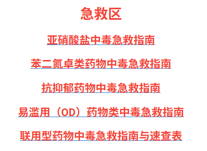
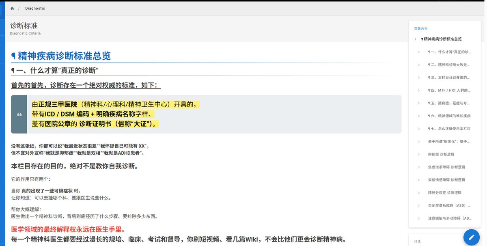

時璃風医詩🌈🏳️🌈
@hagishigure
@LuluvWiki 沒看。不過留個評論看能不能推流到需要的人的tl上。


Luluv Wiki
@LuluvWiki
https://t.co/WH1z0rB6w3 大更新，针对性的每一种药物中毒急救指南基本已施工完毕可在首页快速查阅，并更新了一篇长达32000字的诊断标准文章，我希望这个wiki能救一个人是一个，MTF/X群体本身就很艰难，我们携手走过了这么多时间，生命是顽强的，你的故事绝不该以自杀作为句号。 https://t.co/pMc6hxSWZo